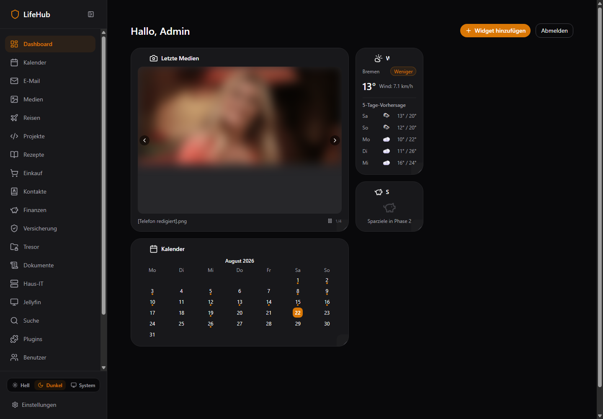
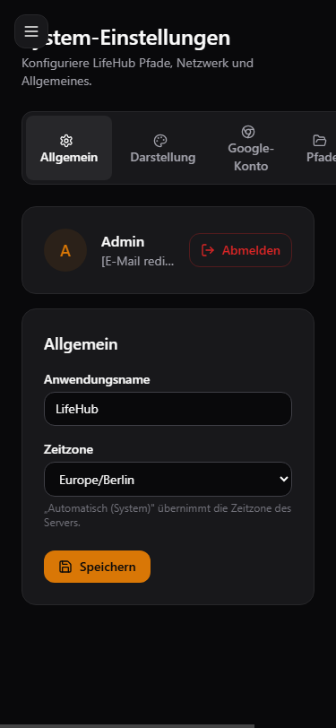
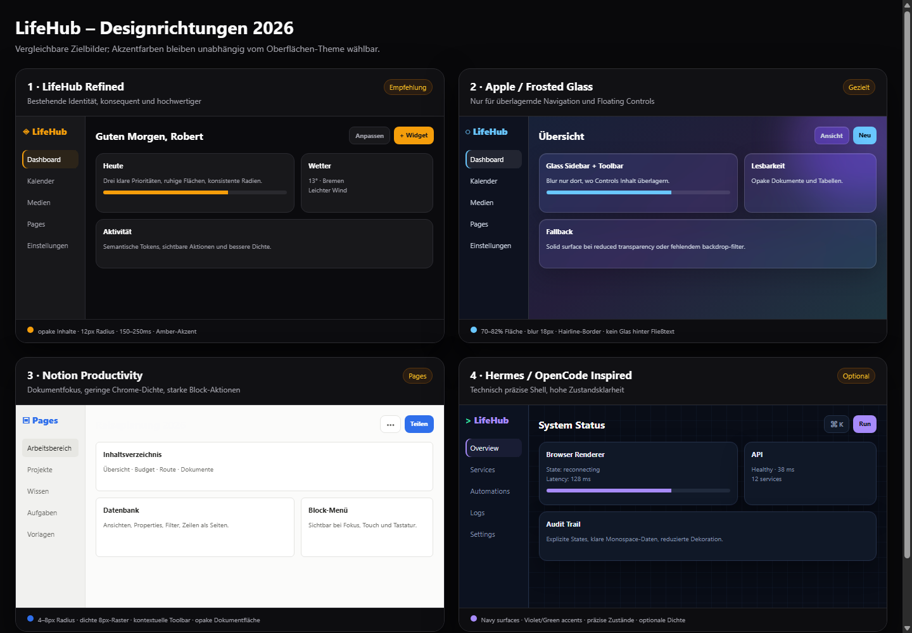

17 Findings
0 P0
10 P1
7 P2
56 Routen
182 Screenshots
1983 Controls
224 Evidence
Scorecard Visuelle Attraktivität 6.4/10
Theme-/Akzent-Reife 4.9/10
Urteil: attraktive Dark-Mode-Basis, aber inkonsistente Tokens, unzureichender Kontrast, versteckte Aktionen und gebrochene Mobile-Reflows.
Antworten Konsistent? Shell und Ikonographie ja; Farben, Controls, States und Domain-Layouts nur teilweise.
Moderner? LifeHub Refined als Default; Frosted Glass nur für Sidebar/Topbar/Overlays; Notion-Patterns im Pages-Workspace; Hermes/OpenCode optional.
Intuitiv? Lesbare Hauptnavigation, aber Hover-only Aktionen, Fake-Empty-States und Mobile-Clipping verhindern ein durchgehend intuitives Erlebnis.
Evidenz 


Glass-Regel Glas nur für überlagernde Shell-Flächen. Dokumente, Tabellen, Finance, Vault und Browser-Viewport bleiben opak. Solid-Fallback, Reduced Transparency und WCAG-Prüfung sind Pflicht.
Coverage 56 Routen × Dark/Light, 60 responsive Captures, 12-Routen-A11y-Pass und 1.983 Control-Evidenzen. Vollständige Matrizen liegen unter evidence/2026-08-22-lifehub/.
Alle Findings Alle Prioritäten P0 P1 P2
UI-001 · 1.799 statische Farbklassen umgehen semantische Tokens P1 Design System CODE_CONFIRMED
Auswirkung Light/Dark und Akzent-Packs driften; hohe Regressiongefahr Evidenz design-token-matrix.csv; Top: projects 195, travel 161, pages 130Ursache Seiten wurden lokal mit Zinc/Amber/Statusfarben statt Komponenten-/Semantik-Tokens gebaut Empfehlung Semantische Surface/Text/Status-Tokens und Komponenten-Wrapper durchsetzen Akzeptanz Verbotene Klassen im dual-mode UI = 0 oder begründete Ausnahme; visuelle Regression Light/Dark Aufwand L UI-002 · Weiße Schrift auf allen brand-500-Presets verfehlt WCAG AA P1 Accessibility BOTH
Auswirkung Primäre CTAs sind für viele Nutzer nicht ausreichend lesbar Evidenz Berechnet: Amber 3.19:1, Blau 3.68, Grün 2.28, Rosé 3.67, Violett 4.23; a11y-audit.jsonUrsache Ein universelles text-white wird auf zu hellen, frei wählbaren Akzenten verwendet Empfehlung Kontrastadaptiven Button-Text oder dunklere CTA-Stufe verwenden Akzeptanz Jedes Preset und Custom-Hex erreicht 4.5:1; automatisierter Kontrasttest Aufwand M UI-003 · text-fg-subtle ist für normalen Text zu kontrastarm P1 Accessibility BOTH
Auswirkung Hilfen, Zähler und Metadaten sind schwer lesbar Evidenz Light 2.56:1, Dark 4.12:1; live Hilfetexte/BadgesUrsache Subtle-Token wird für normalen 10–12px Text statt rein dekorative Inhalte verwendet Empfehlung Token heller/dunkler abstufen und Nutzung auf große/dekorative Inhalte begrenzen Akzeptanz Normaltext >=4.5:1 in Light und Dark Aufwand S UI-004 · Nicht-Amber-Presets verwenden im Light Mode die Dark-first-Skala P1 Theming CODE_CONFIRMED
Auswirkung Blue/Green/Rose/Violet verhalten sich im Light Theme farblich inkonsistent Evidenz globals.css:43-108 vs. :root:not([data-accent]):not(.dark):110-123Ursache data-accent-Selektoren unterscheiden Light und Dark nicht Empfehlung Je Preset separate Light-/Dark-Tokens definieren Akzeptanz Alle sechs Akzente bestehen Snapshot+Kontrasttests in beiden Modi Aufwand M UI-009 · Mobile Shell entspricht nicht der Bottom-Tab-Spezifikation P1 Responsive OBSERVED
Auswirkung Mobile Navigation ist versteckt; Kernbereiche benötigen Zusatzschritt Evidenz mobile/dashboard__375x812__dark.png; UI_UX.md:258-263Ursache Desktop-Sidebar wird nur zum Hamburger statt zu fünf Bottom-Tabs Empfehlung Mobile Bottom-Bar + Mehr-Sheet implementieren Akzeptanz 375px: fünf Kernziele sichtbar, keine Überlagerung Aufwand M UI-010 · Mobile Überschriften/Tabs werden abgeschnitten und horizontal überlaufen P1 Responsive OBSERVED
Auswirkung Seitenname beginnt als „iten“, Settings als „stem…“; Tabs/Pfade abgeschnitten Evidenz mobile/pages, mobile/settings, mobile/email ScreenshotsUrsache Hamburger liegt absolut über Content; Desktop-Tabreihen bleiben ungebrochen Empfehlung Mobile Header-Inset, scrollbare/gestapelte Tabs und Sheet-Navigation Akzeptanz 320/375px ohne Textüberlagerung oder horizontale Page-Scrollbar Aufwand M UI-011 · Zentrale Aktionen sind hover-only und auf Touch unsichtbar P1 Interaction BOTH
Auswirkung Delete/Edit/Remove sind auf Touch und Tastatur kaum erreichbar Evidenz BlockHandle.tsx:74; PageHeader.tsx:128; mehrere BlockkomponentenUrsache opacity-0 group-hover wird als primäres Aktionsmodell genutzt Empfehlung focus-within, sichtbares Touch-Menü und persistente Handles ergänzen Akzeptanz Alle Aktionen per Touch, Tastatur und Screenreader erreichbar Aufwand M UI-012 · A11y-Audit: leere Namen, unlabeled Felder und zu kleine Ziele P1 Accessibility BOTH
Auswirkung Screenreader-/Touchbedienung deutlich eingeschränkt Evidenz 12 Routen: 586 Controls, 4 leere Namen, 13 unlabeled Felder, 469 Ziele <44pxUrsache Icon-Buttons und Inputs verlassen sich auf Optik/Placeholder; 24–40px Targets Empfehlung Accessible Names/Labels und 44px Touchflächen als Komponentenvertrag Akzeptanz 0 leere Namen/unlabeled Felder; kritische Touchziele >=44px Aufwand L UI-013 · Pages-Einträge sind klickbare divs statt Links/Buttons P1 Accessibility BOTH
Auswirkung Keine Tab-Navigation, keine Linksemantik, schlechter Deep-Link Evidenz page.tsx:352-385; live-pages.json listet Einträge nicht als ControlsUrsache onClick/cursor-pointer liegt auf div ohne role/tabIndex Empfehlung Semantische Links/treeitems verwenden Akzeptanz Alle Seiten per Tab/Enter erreichbar und URL kopierbar Aufwand S UI-014 · Backend-500 werden als leere Datenzustände verschleiert P1 Error UX OBSERVED
Auswirkung Nutzer glaubt, er habe keine Daten und kann falsche Aktionen ausführen Evidenz Finance/Shopping/Email Screenshots + live 500sUrsache Queries behandeln error wie leere Arrays oder ignorieren Statusfehler Empfehlung Explizite Error Boundary, Ursache, Retry und Offline-Status Akzeptanz 500 zeigt Fehler+Retry, niemals Empty State Aufwand M UI-005 · Custom-Akzent überschreibt nur 400/500/600 und mischt Rest mit Amber P2 Theming CODE_CONFIRMED
Auswirkung Custom-Theme wirkt in Komponenten mit 50–300/700–900 zweifarbig Evidenz theme-store.ts:35-49Ursache Aus Custom-Hex wird keine vollständige Tonleiter erzeugt Empfehlung Vollständige OKLCH-Tonleiter generieren Akzeptanz 50–900 folgen Custom-Hue; Kontrasttests bestanden Aufwand M UI-006 · Bestehende glass-Utility ist hardcodiert dunkel P2 Glass UI CODE_CONFIRMED
Auswirkung Glass-Flächen funktionieren im Light Theme nicht konsistent Evidenz globals.css:153-157Ursache rgba(24,24,27,.7) und weiße Border sind nicht theme-aware Empfehlung Glass-Surface über semantische RGB/Alpha-Tokens plus Fallback definieren Akzeptanz Light/Dark/Reduced Transparency visuell und per Kontrast geprüft Aufwand S UI-007 · Animationssystem respektiert reduced motion nicht global P2 Motion CODE_CONFIRMED
Auswirkung Vestibuläre Barriere und Verstoß gegen UI_UX.md Evidenz globals.css:165-169; keine prefers-reduced-motion-RegelUrsache Animationen sind unbedingte Utilities Empfehlung Globale reduced-motion-Variante und component-level opt-out Akzeptanz Bei prefers-reduced-motion keine nichtessenzielle Bewegung Aufwand S UI-008 · Dashboard nutzt großen Desktopbereich nicht aus P2 Layout OBSERVED
Auswirkung Schwache Hierarchie, viel tote Fläche, Widgets wirken zufällig Evidenz dashboard__1440x1000__dark__default.pngUrsache Grid packt große Medien-/Kalenderkarten links und schmale Widgets in eine Mini-Spalte Empfehlung Responsive 12-Spalten-Grid, klare Widget-Größen und Ausrichtung Akzeptanz 1440/1920px ohne unbegründete Leerräume; Resize-Grenzen stabil Aufwand M UI-015 · Rezeptkarten zeigen riesige leere Bildflächen bei 404 P2 Media UX BOTH
Auswirkung Unprofessionelle Karten, verschwendete Fläche, schlechter Scan Evidenz recipes screenshot; recipe pages always request /recipes/image/:idUrsache Image wird immer gerendert; Listen-/Detailansicht ohne onError-Fallback Empfehlung Thumbnail-Verfügbarkeit im Modell + kompakter Fallback Akzeptanz 404 zeigt definierte Placeholder-Karte ohne Layoutloch Aufwand S UI-016 · Pages-Übersicht ist optisch flach und wenig klickbar P2 Pages UX OBSERVED
Auswirkung Hierarchie und Ziel der Zeilen sind schwer erkennbar; viel tote Fläche Evidenz pages-overview screenshotUrsache Eine große Card um alle Rows, kaum Hover/Chevron/Metadaten Empfehlung Tree/List mit klaren Row-Zuständen, Sortierung und Suchfeld Akzeptanz Klickziel, Parent/Child und Aktionen sind sofort erkennbar Aufwand M UI-017 · Settings-Tabs besitzen keine Tab-Semantik und brechen mobil P2 Settings UX BOTH
Auswirkung Screenreader- und Mobile-Navigation unklar Evidenz settings/page.tsx:55-70; mobile/settings screenshotUrsache Buttons ohne tablist/tab/aria-selected; feste horizontale Reihe Empfehlung Radix Tabs oder vollständige ARIA-Tabs plus mobile Scroll/Select Akzeptanz Keyboard-Pfeile, aria-selected und 320px-Reflow funktionieren Aufwand S